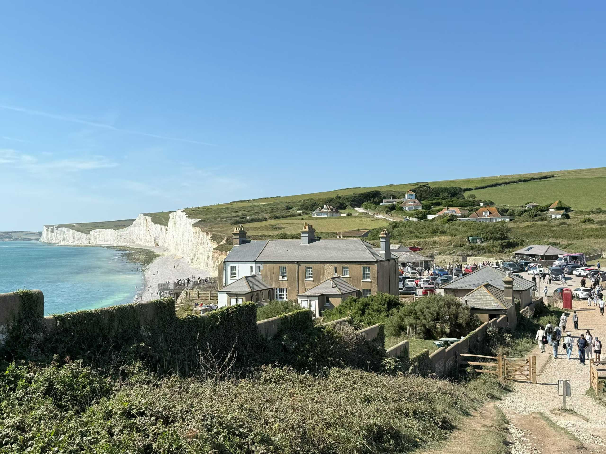
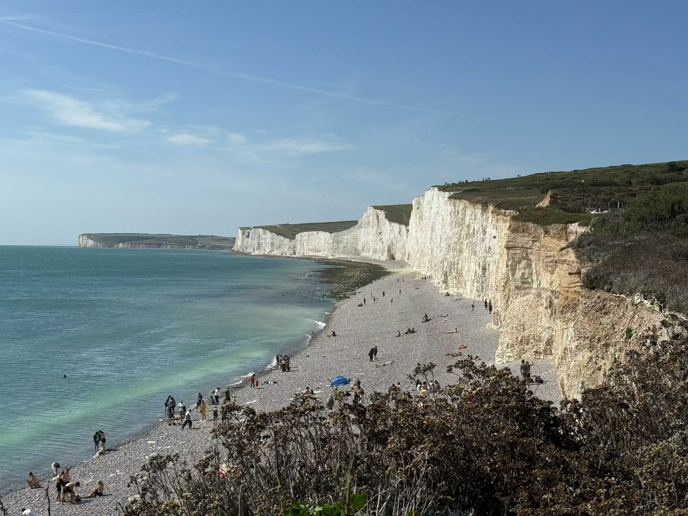
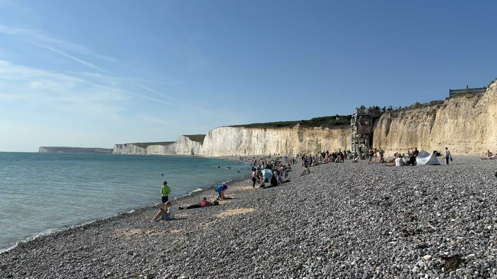
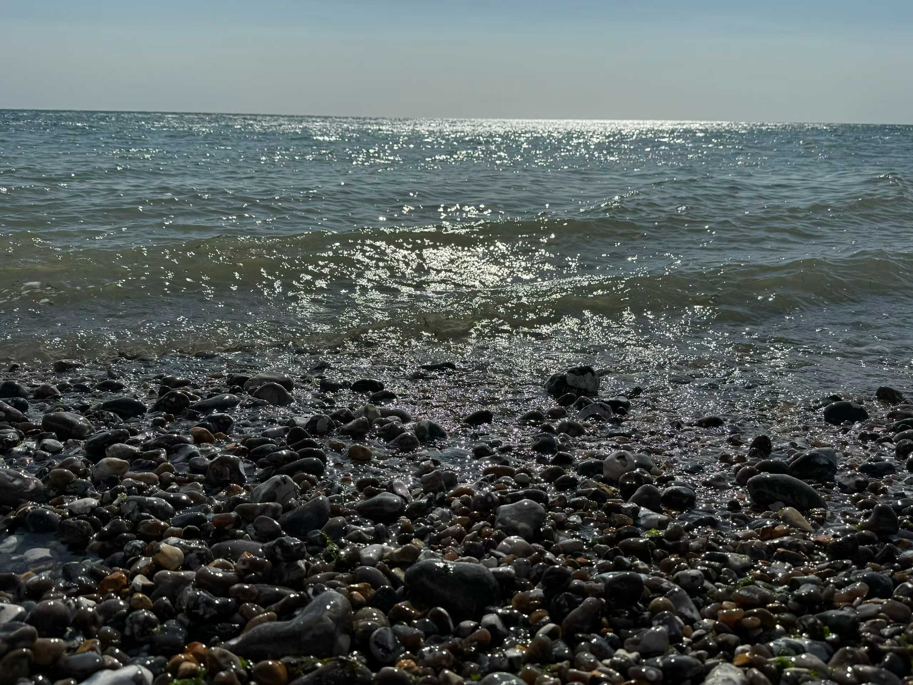
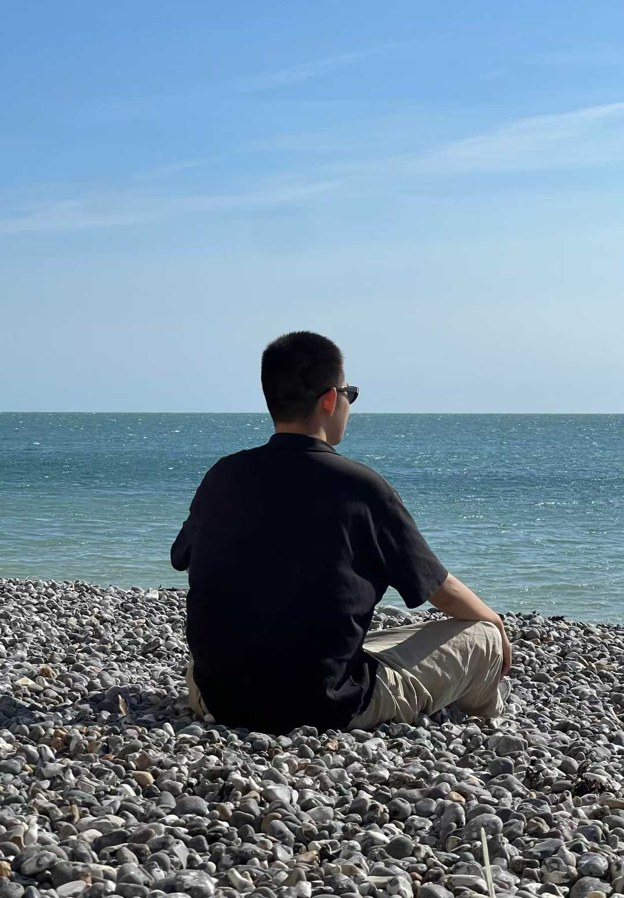
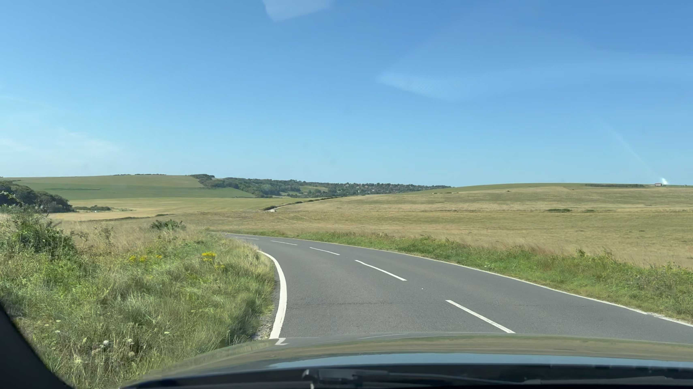
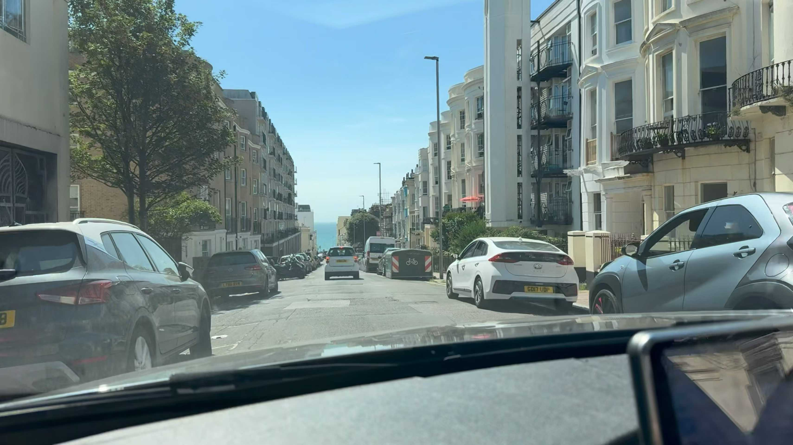
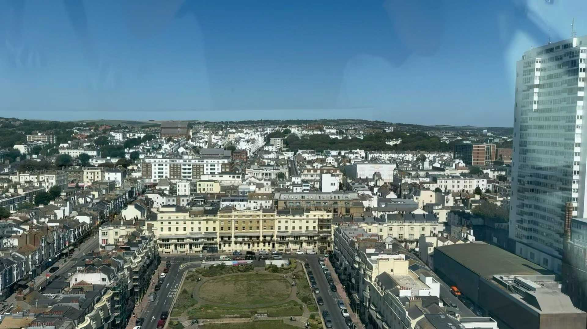
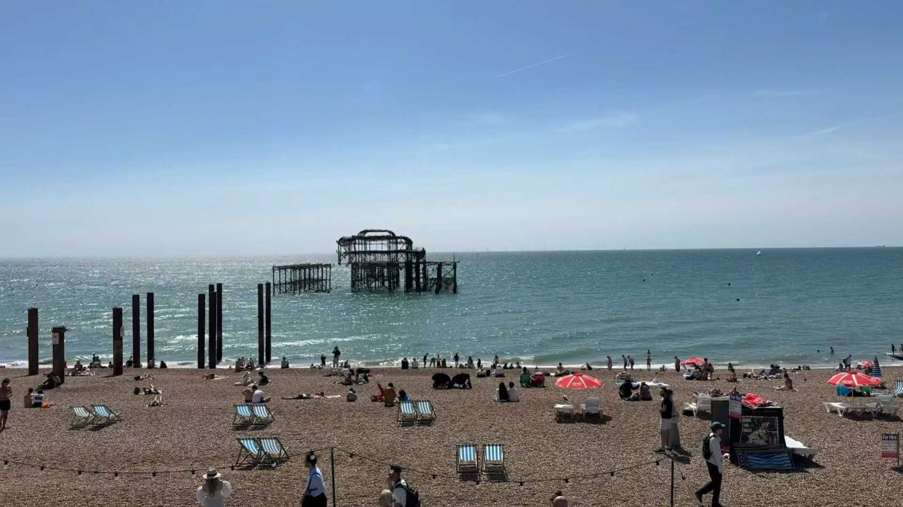

18 AUG 2025 · EASTBOURNE · SEVEN SISTERS CLIFFS · BRIGHTON
Birling Gap
& Seven Sisters Cliffs
& Brighton ~ ☀️
欣赏被《国家地理》杂志称为“世界尽头”的英国白崖，领略南英夏季的壮美风光。
A summer day along the southern coast of England, visiting the white cliffs of Birling Gap and Seven Sisters before continuing to Brighton. The cliffs, sea, and open landscape made this one of the most memorable day trips during my time in Cambridge.

从剑桥出发前往英格兰南部海岸，一路经过开阔的乡间与滨海公路。抵达 Birling Gap 后， 白色悬崖、草坡与英吉利海峡构成了完全不同于剑桥城内的景象。
Leaving Cambridge for the southern coast of England, the journey passed through open countryside and coastal roads. At Birling Gap, the white cliffs, grassland, and the English Channel offered a landscape completely different from the streets and colleges of Cambridge.



海岸线沿着七姐妹白崖不断延伸。从高处向下望，是白色崖壁、深色卵石滩与蓝色海面； 沿海边行走时，则能更直接地感受到悬崖的尺度与南英夏日的海风。
The coastline stretches along the Seven Sisters cliffs. From above, the landscape is composed of white chalk cliffs, dark pebble beaches, and blue water; from the shoreline, the scale of the cliffs and the summer wind of southern England become much more immediate.



离开 Seven Sisters 后继续前往 Brighton。从白崖、海岸公路，到更加热闹的滨海城市， 一天之内看到的是英格兰南部完全不同的几种面貌。这也成为剑桥暑校期间印象最深的一次周末出行之一。
After leaving Seven Sisters, the journey continued toward Brighton. From the white cliffs and coastal roads to a much livelier seaside city, the day revealed several very different sides of southern England. It became one of the most memorable weekend trips during my Cambridge summer program.

